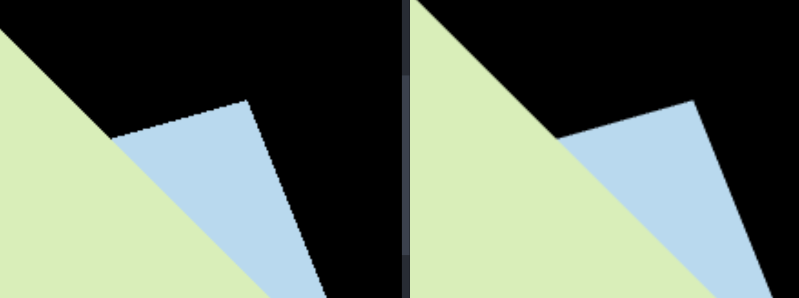
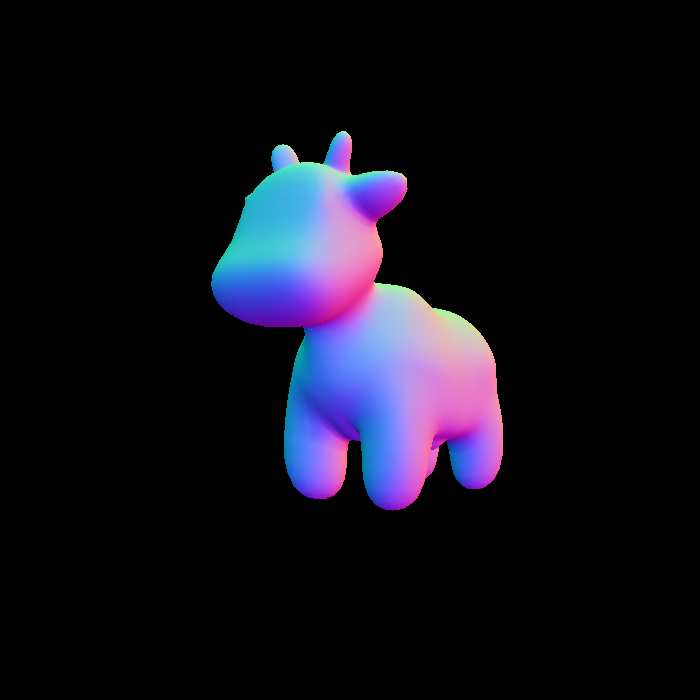
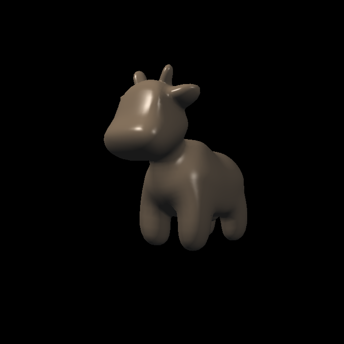
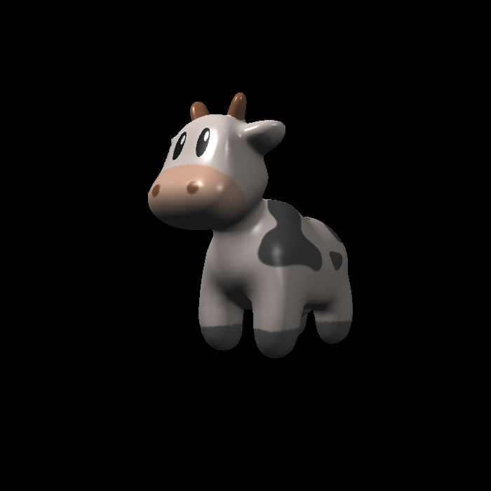
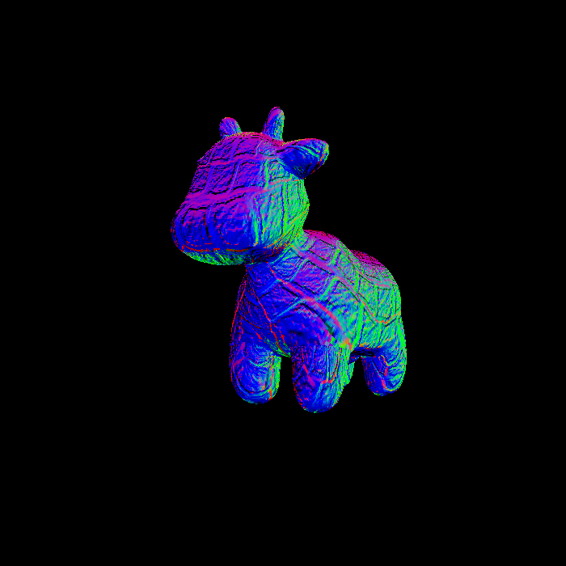
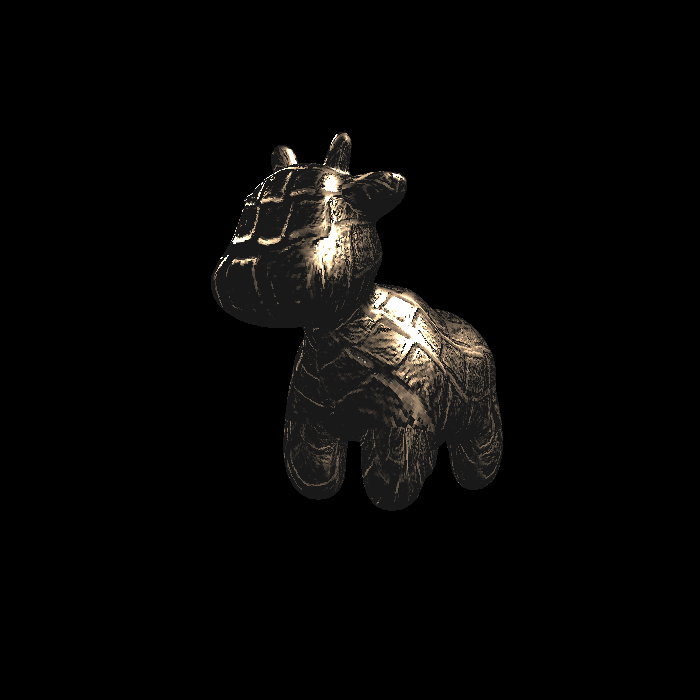
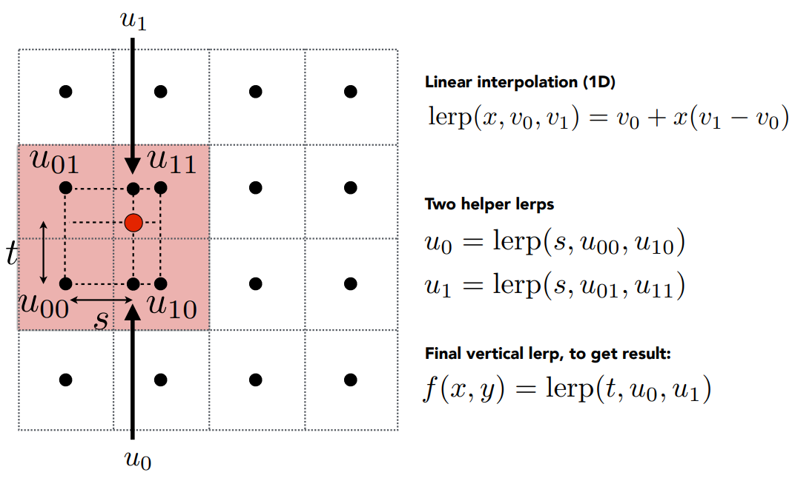
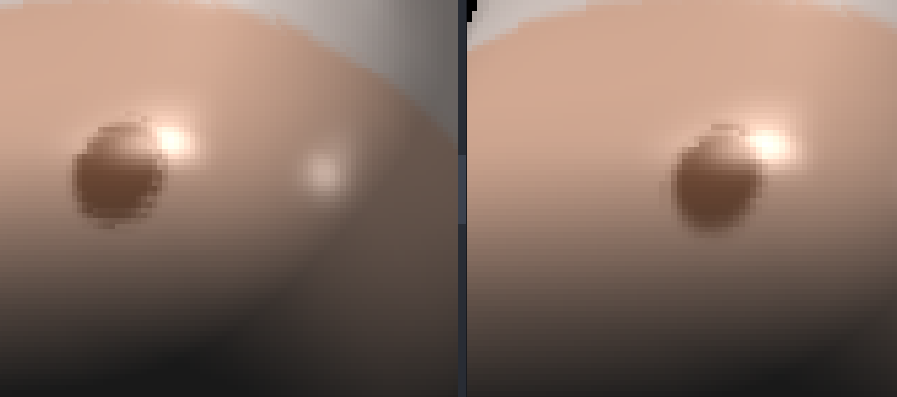
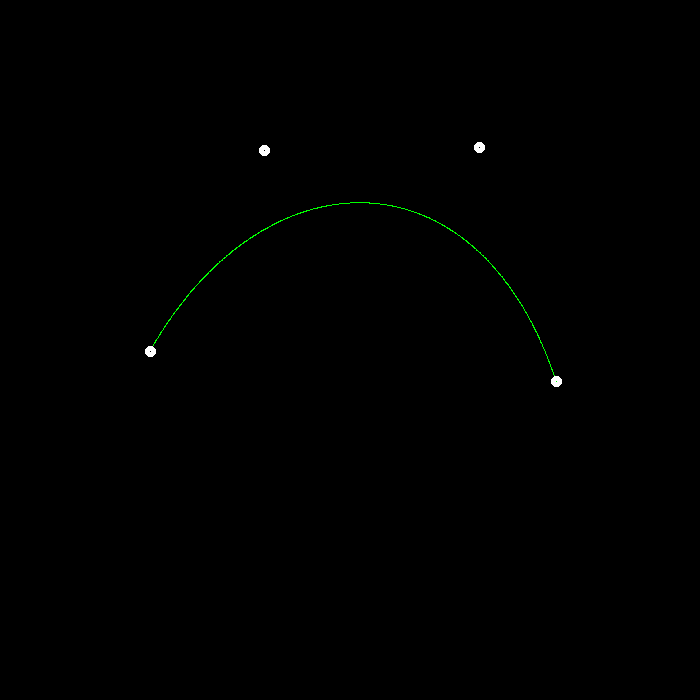
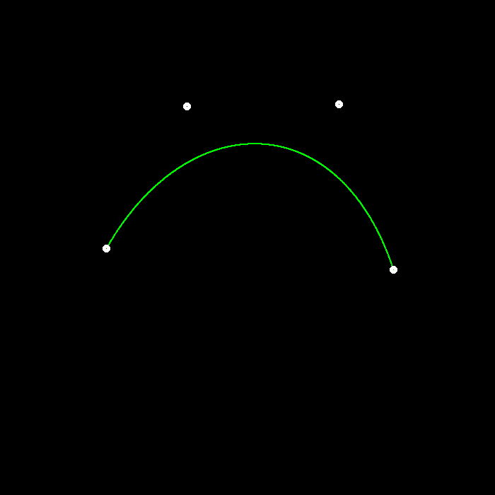

>>> Github
传送门<<<
环境搭建
使用平台：Windows + Vscode + MSYS2 + MinGW
Eigen 库安装 & 编译
进入下载地址 进行下载并解压。
1 2 3 4 cd /your/path/to/Eigenmkdir build && cd buildcmake -G "Unix Makefiles" .. make install -j8
然后会自动在 C:/Program Files(x86) 下生成一个名为
eigen3 的文件夹。也可以移到自己喜欢的地方，记为
/your/path/to/eigen3。
opencv 库安装 & 编译
进入下载地址 进行下载并双击
.exe 文件解压。
1 2 3 4 cd /your/path/to/opencvcd sourcesmkdir build && cd buildcmake -G "Unix Makefiles" -D WITH_OPENGL=ON -D ENABLE_CXX11=ON -D WITH_IPP=OFF -D ENABLE_PRECOMPILED_HEADERS=OFF ..
接下来用管理员权限运行
make -j8 && make install -j8。
会在 sources/build/ 目录下生成一个名为
install
的目录，这就是我们所需要的目录，其他都可以忽略，记为
your/path/to/opencv
编译
CMakelists 参见相应分支。
❗ 注意：需要将 your/path/to/opencv/x64/mingw/bin
加入系统变量 PATH，否则链接阶段会找不到对应的动态库。
Assignment1 透视投影
第一个作业要求实现透视投影的 MVP 三个矩阵。
旋转矩阵(Model)
这里要求实现按 \(\mathbf{z}\)
轴旋转的矩阵。注意 get_model_matrix(float rotation_angle)
的参数是角度制，而使用 C++ 函数 sin()/cos()
时要转为弧度制。
实现如下：
1 2 3 4 5 6 7 8 9 10 11 12 13 14 15 16 17 float angleToRadians (float angle) return MY_PI*angle/180 ; }Eigen::Matrix4f get_model_matrix (float rotation_angle) float cosValue = cos (angleToRadians (rotation_angle)); float sinValue = sin (angleToRadians (rotation_angle)); Eigen::Matrix4f rotate; rotate << cosValue, -sinValue, 0 , 0 , sinValue, cosValue, 0 , 0 , 0 , 0 , 1 , 0 , 0 , 0 , 0 , 1 ; return rotate; }
平移矩阵(View)
这里其实就是将世界中所有物体同时平移，使得相机位于世界坐标的原点。get_view_matrix(Eigen::Vector3f eye_pos)
的参数是相机的初始位置。
实现如下
1 2 3 4 5 6 7 8 9 Eigen::Matrix4f get_view_matrix (Eigen::Vector3f eye_pos) Eigen::Matrix4f translate; translate << 1 , 0 , 0 , -eye_pos[0 ], 0 , 1 , 0 , -eye_pos[1 ], 0 , 0 , 1 , -eye_pos[2 ], 0 , 0 , 0 , 1 ; return translate; }
投影矩阵(Projection)
这里需要我们实现透视投影矩阵，也是本次任务的难点所在。虽然课程中已经用数学方法推导出了矩阵，但这里还有一些不一样的地方：课程中的推导采用右手系，即相机在原点往
\(\mathbf{z}\) 轴负方向看，此时矩阵中的
\(n\) 和 \(f\) 都应为负值。
而通过观察 main() 我们发现，这里
get_projection_matrix(float eye_fov, float aspect_ratio, float zNear, float zFar)
的两个参数 zNear/zFar
传入的都是正数。如果直接用这两个作为 \(n\) 和 \(f\) ，会发现结果出现三角形上下颠倒的问题（准确来说是与预期值在
\(\mathbf{z}\) 轴上偏移了 180°）。
导致这一结果的原因在于，我们在推导过程中认为可视空间内某一点 \((x, y, z)\) 与近平面上的点 \((x', y', n)\)
应当存在这样一个关系
\[
x' = \frac{n}{z}x
\]
一旦 \(n\) 和 \(z\) 符号相反，就会出现 \(x'\) 的值也相反，同理 \(y'\)
的值也反了，那不就使得观测结果不符合预期了么。
我的做法是：依然采用右手系 ，不同的是需要将这两个参数理解为近/远平面离原点的距离，\(n\) 和 \(f\)
各取相应的负值，这样就能解决这一问题了。
1 2 3 4 5 6 7 8 9 10 11 12 13 14 15 16 17 18 19 20 21 22 23 24 25 26 27 28 29 30 31 32 33 34 35 Eigen::Matrix4f get_projection_matrix (float eye_fov, float aspect_ratio, float zNear, float zFar) Eigen::Matrix4f squish; Eigen::Matrix4f translation; Eigen::Matrix4f scale; float n = -zNear; float f = -zFar; squish << n, 0 , 0 , 0 , 0 , n, 0 , 0 , 0 , 0 , n+f, -n*f, 0 , 0 , 1 , 0 ; float top = abs (n)*tan (angleToRadians (eye_fov/2 )); float bottom = -top; float right = top*aspect_ratio; float left = -right; translation << 1 , 0 , 0 , -(left+right)/2 , 0 , 1 , 0 , -(top+bottom)/2 , 0 , 0 , 1 , -(n+f)/2 , 0 , 0 , 0 , 1 ; scale << 2 /(right-left), 0 , 0 , 0 , 0 , 2 /(top-bottom), 0 , 0 , 0 , 0 , 2 /(n-f), 0 , 0 , 0 , 0 , 1 ; return scale*translation*squish; }
BONUS: 按任意轴 axis 旋转
按照课程推导结果代入即可
1 2 3 4 5 6 7 8 9 10 11 12 13 Eigen::Matrix4f get_rotation (Vector3f axis, float angle) Eigen::Matrix4f K = Eigen::Matrix4f::Identity (); float sinValue = sin (angleToRadians (angle)); float cosValue = cos (angleToRadians (angle)); float kx = axis[0 ]; float ky = axis[1 ]; float kz = axis[2 ]; K << 0 , -kz, ky, kz, 0 , -kx, -ky, kx, 0 ; return Eigen::Matrix4f::Identity () + sinValue*K + (1 -cosValue)*K*K; }
总结
第一个作业难度甚至可以说低。唯一的难点在于对 zNear 和
zFar
的理解是否有误，这一点当时卡了我一定时间，解决该问题的同时对整个透视投影的理解也加深了许多。
Assignment2 光栅化
第二个作业要求利用 Z-Buffer 算法实现光栅化。
判断是否在三角形内
经过透视投影后，我们知道了三角形三个顶点在屏幕空间中的坐标。那么对于屏幕空间内的
pixel，可以利用重心坐标来判断是否在三角形内，如果重心坐标的三个值均在
\([0, 1]\) 之间，那么就认为这个 pixel
在三角形内。
1 2 3 4 5 static bool insideTriangle (float x, float y, const Vector3f* _v) auto [alpha, beta, gamma] = computeBarycentric2D (x, y, _v); return alpha >= 0 && beta >= 0 && gamma >= 0 ; }
computeBarycentric2D()
是课程框架为我们实现好的求重心坐标的函数，直接用即可。
对三角形进行光栅化
要实现的函数为
rasterize_triangle()。为了减少开销，我们只需要在三角形的
bounding box 内遍历 pixel 即可。
可能存在的 corner case 是三角形顶点坐标不在可视空间内，所以需要对
bounding box 的边界进行特殊处理。
如果一个 pixel
在三角形内，那么我们需要利用重心坐标求出对应的深度值，并判断是否需要用当前
RGB 覆盖原有的。因为这里是右手系，所以求出的点的 \(\mathbf{z}\)
值都是负数，这个值越大，说明离原点（相机）越近，就是要覆盖的。
1 2 3 4 5 6 7 8 9 10 11 12 13 14 15 16 17 18 19 20 21 22 23 24 25 26 27 void rst::rasterizer::rasterize_triangle (const Triangle& t){ for (int x = min_x; x <= max_x; x++) { for (int y = min_y; y <= max_y; y++) { int pixel_index = get_index (x, y); float sampleX = x + 0.5 ; float sampleY = y + 0.5 ; if (!insideTriangle (sampleX, sampleY, t.v)) continue ; auto [alpha, beta, gamma] = computeBarycentric2D (sampleY, sampleY, t.v); float w_reciprocal = 1.0 /(alpha / v[0 ].w () + beta / v[1 ].w () + gamma / v[2 ].w ()); float z_interpolated = alpha * v[0 ].z () / v[0 ].w () + beta * v[1 ].z () / v[1 ].w () + gamma * v[2 ].z () / v[2 ].w (); z_interpolated *= w_reciprocal; if (isinf (depth_buf[pixel_index]) || z_interpolated > depth_buf[pixel_index]) { depth_buf[pixel_index] = z_interpolated; set_pixel ({x, y, 0 }, t.getColor ()); } } } }
注意到框架让我们用注释的方法求深度值，但提供的代码有些莫名其妙。查阅资料发现，可视空间中的三角形经过透视投影变换到了屏幕空间后，同一点
\(P\)
的重心坐标会发生变化，所以不能直接用屏幕空间中的重心坐标来插值三角形的在可视空间中的真实属性，而需要用一定手段进行校正 。
🙋♂️
看到这里需要特别说明一下，下面所有在屏幕空间 中（求出）的值都会加上
\(\prime\) ，如果没有，则表明这个值是属于可视空间/真实空间 的。
网上关于这个的资料已经非常详细了，我直接贴结论：
\[
\frac{1}{z_P} =
\frac{\alpha'}{z_A}+\frac{\beta'}{z_B}+\frac{\gamma'}{z_C}
\]
解释一下，其中 \(\alpha', \beta',
\gamma'\) 是点 \(P\) 在
\(\triangle{ABC}\)
中屏幕空间 下的重心坐标，而 \(z_P, z_A, z_B, z_C\)
都是这些点在可视空间 中的 \(\mathbf{z}\) 值。
如果想通过插值求点 \(P\) 的属性
\(I\) ，那就用以下公式：
\[
I_P = z_P[\frac{\alpha'}{z_A}I_A + \frac{\beta'}{z_B}I_B +
\frac{\gamma'}{z_C}I_C] = \frac{\frac{\alpha'}{z_A}I_A +
\frac{\beta'}{z_B}I_B +
\frac{\gamma'}{z_C}I_C}{\frac{\alpha'}{z_A}+\frac{\beta'}{z_B}+\frac{\gamma'}{z_C}}
\]
而透视投影矩阵的第四行为 \([0,0,1,0]\) ，也就是说最后得到的 \(\mathbf{w}\)
值自然就存储了顶点的真实深度。这就是为什么框架给的代码用的是齐次坐标
\(\mathbf{w}\) 值而不是 \(\mathbf{z}\) 值了——屏幕空间中的 \(\mathbf{z}\)
值是经过投影变换后的，不是真实深度。
至于之前的旋转平移变换，都只是改变绝对位置，相对位置还是不变的，所以不会影响深度，只要看透视投影就行。
那么框架的代码就很容易理解了，z_interpolated
并不是真实深度，而是可视空间深度。只不过框架这里存在问题，前面
v = t.toVector4() 的时候，函数 toVector4()
里对 \(\mathbf{w}\) 的赋值竟然直接赋了
1，这就导致所谓的校正仍然 fall back
到线性插值。虽然结果看起来没啥问题，但这也是一个值得注意的点。
BONUS: MSAA
为了实现 MSAA，就不能对于一个 pixel 设置一个 Z Buffer
值了。假设我们用 \(n\times n\)
个采样点对同一个 pixel 进行采样，那么就需要对同一个 pixel 设置 \(n\times n\) 个 Z Buffer，与等量的 RGB
Buffer，这样之后就可以求一个 pixel 内所有采样点的 RGB 平均值来上色。
1 2 3 4 5 6 7 8 9 10 11 12 13 14 15 16 17 18 19 20 21 22 23 24 25 26 27 28 29 30 31 32 33 34 35 36 37 38 39 40 41 42 void rst::rasterizer::rasterize_triangle (const Triangle& t){ const int sample_count = msaa*msaa; for (int x = min_x; x <= max_x; x++) { for (int y = min_y; y <= max_y; y++) { int pixel_index = get_index (x, y); int count = 0 ; for (int i = 0 ; i < sample_count; i++) { float samplePointWidth = 1.0 /msaa; int col = i%msaa; int row = i/msaa; float sampleX = x + col*samplePointWidth + samplePointWidth/2 ; float sampleY = y + row*samplePointWidth + samplePointWidth/2 ; if (!insideTriangle (sampleX, sampleY, t.v)) continue ; auto [alpha, beta, gamma] = computeBarycentric2D (sampleX, sampleY, t.v); float w_reciprocal = 1.0 /(alpha / v[0 ].w () + beta / v[1 ].w () + gamma / v[2 ].w ()); float z_interpolated = alpha * v[0 ].z () / v[0 ].w () + beta * v[1 ].z () / v[1 ].w () + gamma * v[2 ].z () / v[2 ].w (); z_interpolated *= w_reciprocal; if (isinf (sample_depth_buf[pixel_index][i]) || z_interpolated > sample_depth_buf[pixel_index][i]) { sample_depth_buf[pixel_index][i] = z_interpolated; sample_color_buf[pixel_index][i] = t.getColor (); count++; } } if (count) { Vector3f res = {0.0 , 0.0 , 0.0 }; for (auto && color : sample_color_buf[pixel_index]) { res += color; } set_pixel ({x, y, 0 }, res/(sample_count)); } } } }
总结
校正插值是本次作业的难点，需要好好理解推导过程。
输出结果如下：

左侧是不用 MSAA 的结果，右侧是使用 4×MSAA
的结果，可以看到锯齿得到了明显改善。
Assignment3 纹理与插值
第三个作业要求我们实现更多属性的插值，并且将纹理应用到模型上。
更多的插值与法线着色
有了作业 2 的前置知识，其实求真实属性已经不是什么难点了，只不过这次
rasterize_triangle() 函数中多了一个名为
view_pos 的参数，通过阅读 draw()
函数我们发现，这正是三角形顶点在可视空间中的坐标，这样一来真实深度就有了，只要在屏幕空间求一遍重心坐标即可。
1 2 3 4 5 6 7 8 9 10 11 12 13 14 15 16 17 18 19 20 21 22 23 24 25 26 27 28 29 30 31 32 33 34 35 36 37 38 39 40 41 42 43 44 45 46 47 48 49 50 51 52 void rst::rasterizer::rasterize_triangle (const Triangle& t, const std::array<Eigen::Vector3f, 3 >& view_pos) { for (int x = min_x; x <= max_x; x++) { for (int y = min_y; y <= max_y; y++) { int pixel_index = get_index (x, y); float sampleX = x + 0.5 ; float sampleY = y + 0.5 ; if (!insideTriangle (sampleX, sampleY, v)) continue ; auto [alpha, beta, gamma] = computeBarycentric2D (sampleX, sampleY, v); float Z = 1.0 / (alpha / v[0 ].w () + beta / v[1 ].w () + gamma / v[2 ].w ()); float zp = alpha * v[0 ].z () / v[0 ].w () + beta * v[1 ].z () / v[1 ].w () + gamma * v[2 ].z () / v[2 ].w (); zp *= Z; if (isinf (depth_buf[pixel_index]) || zp > depth_buf[pixel_index]) { depth_buf[pixel_index] = zp; Vector3f interpolated_color = interpolate ( alpha / v[0 ].w (), beta / v[1 ].w (), gamma / v[2 ].w (), t.color[0 ], t.color[1 ], t.color[2 ], 1 / Z); Vector3f interpolated_normal = interpolate ( alpha / v[0 ].w (), beta / v[1 ].w (), gamma / v[2 ].w (), t.normal[0 ], t.normal[1 ], t.normal[2 ], 1 / Z); Vector2f interpolated_texcoords = interpolate ( alpha / v[0 ].w (), beta / v[1 ].w (), gamma / v[2 ].w (), t.tex_coords[0 ], t.tex_coords[1 ], t.tex_coords[2 ], 1 / Z); Vector3f interpolated_shadingcoords = interpolate ( alpha / v[0 ].w (), beta / v[1 ].w (), gamma / v[2 ].w (), view_pos[0 ], view_pos[1 ], view_pos[2 ], 1 / Z); fragment_shader_payload payload ( interpolated_color, interpolated_normal.normalized(), interpolated_texcoords, texture ? &*texture : nullptr ) payload.view_pos = interpolated_shadingcoords; Vector3f pixel_color = fragment_shader (payload); set_pixel ({x, y}, pixel_color); } } } }
输出结果如下：

Blinn Phong 着色
Blinn Phong
模型里面有三个项：漫反射项、高光项、环境光项。这些项的所需参数大部分都在框架中给出，需要我们求的有
光线方向 \(\mathbf{l}\) ；
观测方向 \(\mathbf{v}\) ；
半程向量 \(\mathbf{h}\) ；
注意，结构体 fragment_shader_payload
中包含了非常多有用信息，比如
着色点真实坐标 view_pos；
着色点 RGB color；
着色点法线方向 normal；
着色点纹理坐标 tex_coords；
着色点所在模型对应的纹理 texture；
那么 \(\mathbf{l},\mathbf{v},\mathbf{h}\)
就很好求了，要注意的是公式里的这些变量都是单位向量，要调用
normalized() 进行单位化。
1 2 3 4 5 6 7 8 9 10 11 12 13 14 15 16 17 18 19 20 21 22 23 24 25 26 27 28 29 30 31 32 33 34 35 36 37 38 39 Eigen::Vector3f phong_fragment_shader (const fragment_shader_payload& payload) Eigen::Vector3f ka = Eigen::Vector3f (0.005 , 0.005 , 0.005 ); Eigen::Vector3f kd = payload.color; Eigen::Vector3f ks = Eigen::Vector3f (0.7937 , 0.7937 , 0.7937 ); auto l1 = light{{20 , 20 , 20 }, {500 , 500 , 500 }}; auto l2 = light{{-20 , 20 , 0 }, {500 , 500 , 500 }}; std::vector<light> lights = {l1, l2}; Eigen::Vector3f amb_light_intensity{10 , 10 , 10 }; Eigen::Vector3f eye_pos{0 , 0 , 10 }; float p = 150 ; Eigen::Vector3f color = payload.color; Eigen::Vector3f point = payload.view_pos; Eigen::Vector3f normal = payload.normal; Eigen::Vector3f result_color = {0 , 0 , 0 }; for (auto & light : lights) { Vector3f l = (light.position - point).normalized (); Vector3f v = (eye_pos - point).normalized (); Vector3f h = (l + v).normalized (); float r_square = (light.position - point).dot (light.position - point); Vector3f light_intensity = light.intensity / r_square; Vector3f ambient_item = product (ka, amb_light_intensity); Vector3f diffuse_item = product (kd, light_intensity) * std::max <float >(0.0 , normal.dot (l)); Vector3f specular_item = product (ks, light_intensity) * std::pow (std::max <float >(0.0 , normal.dot (h)), p); result_color += ambient_item + diffuse_item + specular_item; } return result_color * 255.f ; }
这里
ka/kd/ks/light_intensity
都是三元向量，分别在 RGB
三个通道上进行乘算，最后的结果也是一个三元向量，那就需要定义一个新的向量乘法，使得
\(\text{product}([a_1, a_2, \dots, a_n], [b_1,
b_2, \dots, b_n]) = [a1*b_1, a2*b_2,\dots,a_n*b_n]\) 。
输出结果如下：

纹理着色
这一步是在 Blinn Phong 的基础上用纹理中的 RGB 值代替模型本身 RGB
值，在前面加上以下代码即可。
1 2 3 4 5 6 if (payload.texture){ float u = payload.tex_coords.x (); float v = payload.tex_coords.y (); return_color = payload.texture->getColorBilinear (u, v); }
输出结果如下：

凹凸贴图
按照注释实现即可，其中 TBN 矩阵会在后续进行推导。输出结果如下：

位移贴图
依然是按照注释实现。输出结果如下：

BONUS: 双线性插值
我们需要在 Texture.hpp 里实现函数
getColorBilinear()。结合下面这张图，我们可以得出一些思路。

第一步要做的是找出离纹理坐标系上的一点 \((u, v)\) 最近的 4 个
texel，那么就需要根据这个点在当前 texel
的位置进行判断。我们可以计算当前点到左侧 texel
中心在横坐标上的距离（对应公式中的 \(s\) ），如果值大于
1，说明在横向上最近的是右侧 texel，反之是左侧的 texel。我们只需要将当前
\((u, v)\) 定位到 4 个 texel
中左下的那个，就可以很方便地进行计算了。
1 2 3 4 5 6 7 8 9 10 11 12 13 14 15 16 17 18 19 20 21 22 23 24 25 26 27 28 29 30 31 Eigen::Vector3f getColorBilinear (float u, float v) auto u_img = u * width; auto v_img = (1 - v) * height; float s = u_img-(int )u_img + 0.5 ; float t = v_img-(int )v_img + 0.5 ; if (s > 1 ) { s = s-1 ; } else { u_img = u_img-1 ; } if (t > 1 ) { t = t-1 ; } else { v_img = v_img-1 ; } auto u00 = image_data.at <cv::Vec3b>(v_img, u_img); auto u10 = image_data.at <cv::Vec3b>(v_img, u_img + 1 ); auto u01 = image_data.at <cv::Vec3b>(v_img + 1 , u_img); auto u11 = image_data.at <cv::Vec3b>(v_img + 1 , u_img + 1 ); auto u0 = u00 + s * (u10 - u00); auto u1 = u01 + t * (u11 - u01); auto color = u0 + t * (u1 - u0); return Eigen::Vector3f (color[0 ], color[1 ], color[2 ]); }
输出结果对比（奶牛鼻子处），右侧是采用双线性插值的结果，可以看到过渡更加平滑。

总结
框架帮我们实现了 insideTriangle()
函数，但可能会出现纹理坐标 \(>1\)
的情况，修改为用重心坐标判断就 ok 了。
Assignment4 贝塞尔曲线
第四个作业要求我们绘制贝塞尔曲线。
贝塞尔曲线
课程给的框架中为我们实现了一个静态的贝塞尔曲线绘制函数
naive_bezier()，根据 4
个控制点进行绘制。我们需要实现另一个递归的版本。
递归版本的思路是：对于给定控制点集 \(C=\{c_1, c_2, \dots,
c_n\}\) ，取所有的相邻的两个控制点 \(c_i, c_{i+1}\) ，找到所有的 \(n-1\) 个 \(t\) 分点 \(c_{i,
t} = t*c_i + (1-t)*c_{i+1}\) 加入新的控制点集合 \(C' = \{c_{1,t}, c_{2,t}, \dots, c_{n-1,
t}\}\) ，并作为递归函数的参数传入。
1 2 3 4 5 6 7 8 9 10 11 12 13 14 15 16 17 18 19 20 21 cv::Point2f recursive_bezier (const std::vector<cv::Point2f> &control_points, float t) if (control_points.size () == 1 ) { return control_points[0 ]; } std::vector<cv::Point2f> new_control_points; for (int i = 0 ; i < control_points.size ()-1 ; i++) { new_control_points.emplace_back (t * control_points[i] + (1 -t) * control_points[i+1 ]); } return recursive_bezier (new_control_points, t); } void bezier (const std::vector<cv::Point2f> &control_points, cv::Mat &window) for (double t = 0.0 ; t <= 1.0 ; t += 0.001 ) { cv::Point2f point = recursive_bezier (control_points, t); window.at <cv::Vec3b>(point.y, point.x)[1 ] = 255 ; } }
虽然课程框架只说实现 4
个控制点的版本，但是递归的实现应该能够支持任意数量的控制点。
输出结果如下：

反走样
曲线反走样的基本思路就是加粗 。虽然这里不能用双线性插值，因为最近的
4 个像素点不一定都有颜色，但是也值得参考。我们可以找最近的四个
pixel，根据 bezier(t) 与这些 pixels
中心点的距离来为其赋予相应的 G 值。
对于一个点来说，其与最近 4 个 pixel-center 的距离应该在区间 \([0, \sqrt{2}]\) 内，并且离一个 pixel
越近，这个 pixel 的 G 值就应该越高，可以简单的用公式 \(\displaystyle G =
255*(1-\frac{d}{\sqrt{2}})\) 来线性计算，从而得到下面的代码
1 2 3 4 5 6 7 8 9 10 11 12 13 14 15 16 17 18 19 20 21 22 23 24 25 26 27 28 29 30 31 32 void bezier_antialiasing (const std::vector<cv::Point2f> &control_points, cv::Mat &window) for (double t = 0.0 ; t <= 1.0 ; t += 0.001 ) { cv::Point2f point = recursive_bezier (control_points, t); float x = point.x; float y = point.y; float u = x - (int )x + 0.5 ; float v = y - (int )y + 0.5 ; if (u > 1 ) { u = u-1 ; } if (v > 1 ) { v = v-1 ; } float d00 = pow (u, 2 ) + pow (v, 2 ); float d01 = pow (1 -u, 2 ) + pow (v, 2 ); float d10 = pow (u, 2 ) + pow (1 -v, 2 ); float d11 = pow (1 -u, 2 ) + pow (1 -v, 2 ); window.at <cv::Vec3b>(y, x)[1 ] = fmin (255 , window.at <cv::Vec3b>(y, x)[1 ] + 255 * (1 - sqrt (d00 / 2 ))); window.at <cv::Vec3b>(y, x + 1 )[1 ] = fmin (255 , window.at <cv::Vec3b>(y, x + 1 )[1 ] + 255.0 * (1 - sqrt (d01 / 2 ))); window.at <cv::Vec3b>(y + 1 , x)[1 ] = fmin (255 , window.at <cv::Vec3b>(y + 1 , x)[1 ] + 255.0 * (1 - sqrt (d10 / 2 ))); window.at <cv::Vec3b>(y + 1 , x + 1 )[1 ] = fmin (255 , window.at <cv::Vec3b>(y + 1 , x + 1 )[1 ] + 255.0 * 1 - sqrt (d11 / 2 )); } }
输出结果如下：

可以看到锯齿现象得到了明显改善。
总结
没有难度。